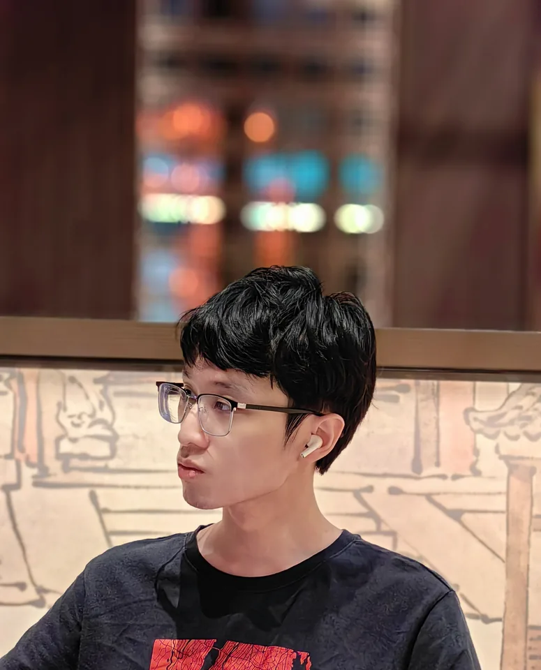

在线
李植
游戏 / 关卡策划
中央美术学院 / The University of the Arts London设计是设计师创造一个供参与者体验的情境，而意义从这一情境自然浮现

游戏 / 关卡策划
中央美术学院 / The University of the Arts London一名资深的游戏爱好者，设计过诸多游戏 Demo 以积攒经验，正以设计出“令人惊叹”的游戏关卡、创造出自己心目中理想的游戏世界作为目标而持续努力学习……
本科毕业于中央美术学院艺术管理专业，硕士毕业于伦敦传媒学院游戏设计专业。
在校期间曾任游戏社社长，牵头举办学院电竞比赛，兴办日常桌游活动，设计实景大逃杀游戏……
* 最早于小学就开始绘制游戏本进行游戏设计实践，广获同学好评而被老师叫停（戏言 :D）
擅长